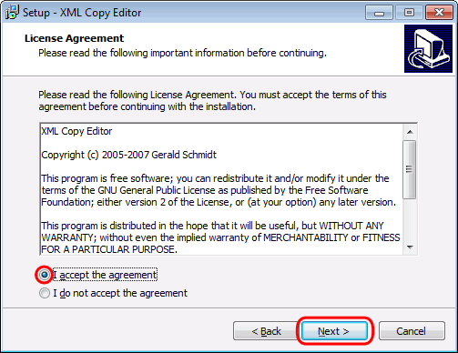

La última versión disponible actualmente (febrero de 2022) es la versión XML Copy Editor 1.3.0.0 (del 19 de agosto de 2020). Enlace de descarga para Windows (32 bits): XML Copy Editor 1.3.0.0 (17,8 MB).
Nota: En caso de que esta versión dé problemas, se puede utilizar la versión XML Copy Editor 1.2.1.3 (del 6 de septiembre de 2014). Enlace de descarga para Windows (32 bits): XML Copy Editor 1.2.1.3 (9,2 MB).
En cdlibre.org hay una sección dedicada a editores XML libres, con información detallada sobre las últimas versiones publicadas para Windows.
Instalar XML Copy Editor
Una vez descargado el instalador de XML Copy Editor, haciendo doble clic en él se inicia la instalación.
La primera pantalla anuncia que se va a instalar XML Copy Editor e indica la versión que se va a instalar. Para continuar, haga clic en el botón "Next".
La segunda pantalla muestra la licencia de XML Copy Editor (GPL 2 o posterior) y solicita al usuario su conformidad. Para continuar, marque el botón radio "I accept the agreement" y haga clic en el botón "Next".

La tercera pantalla pregunta la carpeta de instalación donde se instalará el programa. Por omisión, XML Copy Editor se instala en C:\Archivos de programa (x86)\XML Copy Editor. Para continuar, haga clic en el botón "Next".
La cuarta pantalla pregunta el nombre de la carpeta en el menú Inicio. Por omisión, la carpeta se llama XML Copy Editor. Para continuar, haga clic en el botón "Next".
La quinta pantalla pregunta si se crea un icono de acceso directo en el escritorio, si se quiere instalar XML sin privilegios de administrador y si se asocian a XML Copy Editor las extensiones de archivos que XML Copy Editor es capaz de manejar. Para continuar, haga clic en el botón "Next".
La sexta pantalla muestra todas las opciones elegidas en las pantallas anteriores y solicita confirmación para iniciar la instalación. Para continuar, haga clic en el botón "Install".
A continuación se iniciará el proceso de instalación. La instalación de XML Copy Editor puede durar unos minutos.
Una vez completada la instalación, se mostrará la pantalla final. Haciendo clic en en el botón "Finish" se cerrará el programa de instalación.
Interface y configuración de XML Copy Editor
El interface de XML Copy Editor es similar al de cualquier editor de texto sin formato.
Al abrir XML Copy Editor el editor muestra la plantilla de un documento XML con la declaración XML. Si se quiere crear un documento XML desde cero, se puede elegir el menú Fichero > Nuevo... y elegir la opción Documento XML (*.xml), como muestra la imagen siguiente:
El menú Herramientas > Opciones > Editor permite configurar el comportamiento de XML Copy Editor al editar archivos XML. Personalmente, yo prefiero desmarcar la casilla "Siempre insertar etiqueta de cerrado".
En el menú Herramientas > Opciones > General se puede desactivar la opción "Guardar marca de orden de bytes UTF-8", ya que la marca de orden de bytes (BOM) no tiene mucho sentido en UTF-8, puesto que en UTF-8 no existe el problema del orden de los bytes en los caracteres que se codifican con varios caracteres.
Nota: En la versión XML Copy Editor 1.2.0.7 y anteriores se podía elegir el navegador predeterminado de XML Copy Editor, independientemente del navegador predeterminado del sistema. Haciendo clic en Buscar se debía elegir el ejecutable del navegador.
Juego de caracteres
La declaración xml indica el juego de caracteres del documento. El juego de caracteres que se utiliza en este curso es UTF-8:
<?xml version="1.0"encoding="UTF-8"?>
Se pueden utilizar otros juegos de caracteres, como ISO-8859-1 (Europeo occidental):
<?xml version="1.0"encoding="ISO-8859-1"?>
Es importante que el juego de caracteres que aparece en la declaración sea el juego de caracteres en que realmente está guardado el documento, porque si no el procesador XML puede tener problemas leyendo el documento.
XML Copy Editor tiene en cuenta el juego de caracteres indicado en la declaración. Si se modifica la declaración, al guardar el documento se guarda en el juego correspondiente. Pero hay que tener en cuenta que otros editores, como el bloc de notas de Windows, no lo hace.
Comprobar que un documento está bien formado
Para comprobar si un documento está bien formado, se puede elegir el menú XML > Comprobar Bien-Formado, hacer clic en el botón correspondiente, o pulsar la tecla F2.
En caso de que el documento esté bien formado, el programa lo indica en la parte inferior de la pantalla, como muestra la imagen siguiente:
En caso de que el documento no esté bien formado, el programa lo indica en la parte inferior de la pantalla, como muestra la imagen siguiente. El mensaje inferior explica el tipo de error detectado y la línea en el que se ha detectado (en el ejemplo, las etiquetas de la línea 3 no coinciden). Si el documento contiene varios errores, sólo se muestra uno de ellos, por lo que una vez corregido un error es necesario repetir la comprobación hasta que el documento esté bien formado.
Comprobar que un documento es válido
Para comprobar si un documento es válido, se puede elegir el menú XML > Validar > DTD/XML Schema, hacer clic en el botón correspondiente, o pulsar la tecla F5.
En caso de que el documento sea válido, el programa lo indica en la parte inferior de la pantalla, como muestra la imagen siguiente:
En caso de que el documento no sea válido, el programa lo indica en la parte inferior de la pantalla, como muestra la imagen siguiente. El mensaje inferior explica el tipo de error detectado y la línea en el que se ha detectado (en el ejemplo, que la etiqueta contiene texto cuando la DTD lo define vacío). Si el documento contiene varios errores, sólo se muestra uno de ellos, por lo que una vez corregido un error es necesario repetir la validación hasta que el documento sea válido.
Enlazar una hoja de estilo CSS
XML Copy Editor no incluye opciones de menú relacionadas con el enlace a hoja de estilo CSS, por lo que es necesario escribir manualmente la instrucción de procesamiento.
La hoja de estilo puede crearse con cualquier editor de texto sin formato o con el propio XML Copy Editor.
Al crear un nuevo documento, XML Copy Editor no ofrece la posibilidad de crear una hoja de estilo css, pero se puede crear un nuevo documento XML, guardarlo con el nombre y extensión deseados (en el ejemplo, estilo.css), borrar la declaración XML y escribir la hoja de estilo. Para que se coloree el código, puede ser necesario recargar el documento (mediante el menú Fichero > Recargar.
Lo que sí se puede hacer es pedir a XML Copy Editor que abra un documento en el navegador predeterminado:
... y comprobar que se aplica la hoja de estilo:
Evaluar una expresión XPath
Para evaluar una expresión XPath en un documento XML se puede elegir el menú XML > Evaluar XPath... o pulsar la tecla F9 .
A continuación se introduce la expresión XPath a evaluar y se hace clic en OK:
Si la expresión no produce ningún resultado, XML Copy Editor lo indica en la parte inferior:
Si la expresión produce algún resultado (por ejemplo si la expresión hubiera sido //ejemplo), el resultado se muestra en una nueva pestaña. El mensaje de error que aparece en la parte inferior hace referencia a que el documento que contiene la respuesta no es un documento XML válido (no tiene por ejemplo, una etiqueta que englobe todos los elementos), pero eso no quiere decir que la evaluación de XPath sea incorrecta.
Aplicar una transformación XSLT
Nota: Si se aplica una transformación XSLT que tiene errores, a menudo XML Copy Editor sigue mostrando el mismo mensaje de error al volver a aplicar la transformación aunque se haya corregido el error. En estos casos no queda más remedio que reiniciar XML Copy Editor.
XML Copy Editor permite crear hojas de estilo XSLT mediante el menú Fichero > Nuevo... > XSL stylesheet:
La hoja de estilo se crea en una nueva pestaña con una plantilla:
Para poder aplicar posteriormente la transformación XSLT es necesario guardar la hoja de estilo (con la extensión .xsl):
Para aplicar una transformación XSLT a un documento XML, se debe elegir primero la pestaña en la que se encuentra el documento y elegir el menú XML > XSL Transformación... o pulsar la tecla F8.
Si el documento no enlaza ninguna hoja de estilo XSLT, XML Copy Editor solicita al usuario el nombre del archivo, que puede seleccionarse haciendo clic en el botón Buscar. Una vez seleccionado, haga clic en el botón OK.
El resultado (en este caso un documento que tan sólo incluye la declaración xml) se mostrará en una nueva pestaña. El aviso de la barra de estado no significa que la transformación no haya funcionado correctamente, sino que el resultado de la transformación no es un documento válido (puesto que sólo incluye la declaración xml):
Si el documento XML incluye un enlace a la hoja de estilo XSLT ...
... al elegir el menú XML > XSL Transformación... o pulsar la tecla F8, XML muestra directamente el resultado de la transformación en una nueva pestaña (en este caso un documento que tan sólo incluye la declaración xml). El aviso de la barra de estado no significa que la transformación no haya funcionado correctamente, sino que el resultado de la transformación no es un documento válido (puesto que sólo incluye la declaración xml):